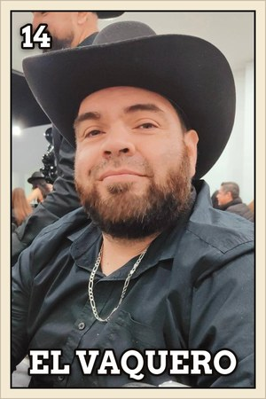
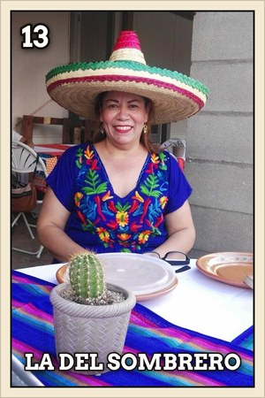
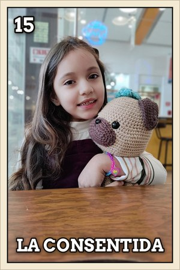
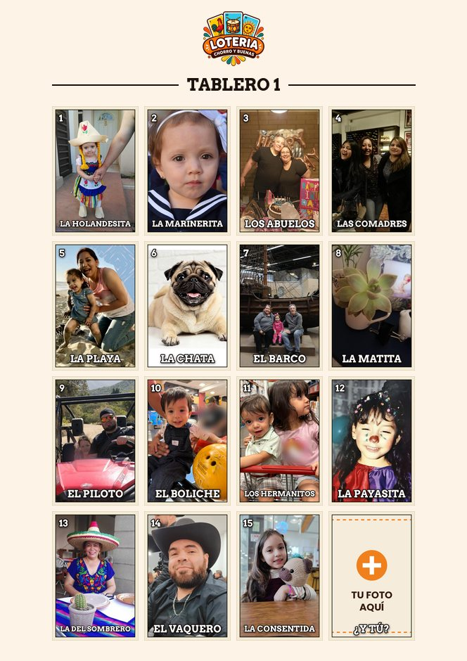
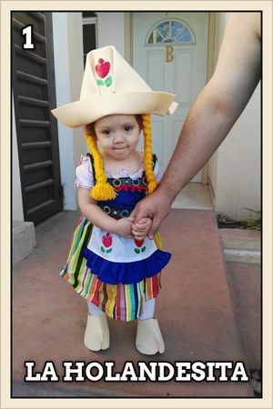
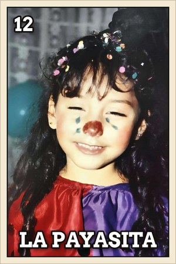
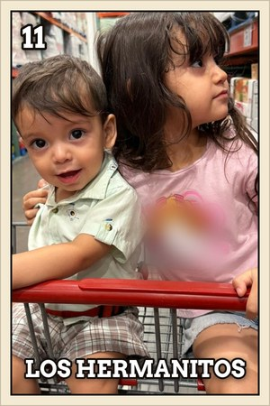

¿Qué es la Lotería Mexicana?
Un juego de azar parecido al bingo, pero con imágenes, versos y mucha convivencia. Es parte de las fiestas mexicanas desde hace generaciones.




Historia y origen
La Lotería tiene sus raíces en Europa y se adaptó en México hasta volverse un juego muy nuestro.
Italia y Europa
Su antecedente más conocido es el «lotto» italiano, un juego de azar con números que se extendió por Europa y llegó a España.
Época colonial
Con los españoles, el juego llegó a la Nueva España. Al principio era un pasatiempo de las clases acomodadas; con el tiempo se volvió parte de las ferias y fiestas de los pueblos.
Se vuelve mexicana
Los números se cambiaron por imágenes de la vida diaria y de la cultura popular: El Gallo, La Dama, El Catrín, La Sirena… A finales del siglo XIX se popularizó la baraja de 54 cartas que hoy reconoce casi todo México.
Hoy
Se juega en ferias, kermeses, posadas y reuniones familiares; se usa en escuelas para aprender palabras y hasta inspira arte y diseño. Y ahora también puedes jugarla con tus propias fotos.

Más que un juego, una tradición
La lotería ha unido a familias y comunidades por generaciones. Se aprende de los abuelos, se juega en las fiestas y se pasa de padres a hijos, con los mismos gritos, las mismas risas y los mismos frijoles.
Tu propia lotería
Mantén viva la tradición con una lotería hecha con tus fotos: tu familia, tus amigos o tus mascotas como cartas. Perfecta para cualquier ocasión.




Las 54 cartas de la lotería tradicional
Estos son los nombres de la baraja clásica, en su orden. Cada carta tiene su número, su imagen y, casi siempre, un verso que el cantor recita al sacarla.
- 1El Gallo
- 2El Diablito
- 3La Dama
- 4El Catrín
- 5El Paraguas
- 6La Sirena
- 7La Escalera
- 8La Botella
- 9El Barril
- 10El Árbol
- 11El Melón
- 12El Valiente
- 13El Gorrito
- 14La Muerte
- 15La Pera
- 16La Bandera
- 17El Bandolón
- 18El Violoncello
- 19La Garza
- 20El Pájaro
- 21La Mano
- 22La Bota
- 23La Luna
- 24El Cotorro
- 25El Borracho
- 26El Negrito
- 27El Corazón
- 28La Sandía
- 29El Tambor
- 30El Camarón
- 31Las Jaras
- 32El Músico
- 33La Araña
- 34El Soldado
- 35La Estrella
- 36El Cazo
- 37El Mundo
- 38El Apache
- 39El Nopal
- 40El Alacrán
- 41La Rosa
- 42La Calavera
- 43La Campana
- 44El Cantarito
- 45El Venado
- 46El Sol
- 47La Corona
- 48La Chalupa
- 49El Pino
- 50El Pescado
- 51La Palma
- 52La Maceta
- 53El Arpa
- 54La Rana
Preguntas frecuentes
¿Qué es la lotería mexicana?
Es un juego de azar tradicional, parecido al bingo, pero con imágenes en lugar de números. Un cantor saca cartas de una baraja y los jugadores marcan en su tablero las que van saliendo.
¿Cuál es la diferencia entre la lotería y el bingo?
En el bingo se cantan números; en la lotería, imágenes con nombre, y muchas veces con un verso. Además, la lotería tiene jugadas propias como el chorro, el centro o las cuatro esquinas.
¿Cuántas cartas tiene la lotería?
La baraja tradicional tiene 54 cartas y cada tablero tiene 16 imágenes en una cuadrícula de 4×4.
¿De dónde viene la lotería?
Tiene su antecedente en el «lotto» italiano, que llegó a México durante la época colonial y aquí se transformó en el juego de imágenes que conocemos.
¿Puedo hacer una lotería con mis propias fotos?
Sí. En chorroybuenas subes tus fotos, se convierten en cartas y generas los tableros y la baraja en un PDF listo para imprimir, gratis.
¿Listo para crear tu propia lotería?
Personaliza tu juego con tus imágenes y disfruta esta tradición mexicana.